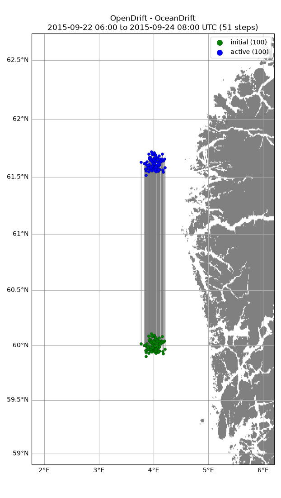

Note
Go to the end to download the full example code.
Constant current
from datetime import datetime, timedelta
from opendrift.models.oceandrift import OceanDrift
o = OceanDrift(loglevel=20) # Set loglevel to 0 for debug information
14:22:12 INFO opendrift:576: OpenDriftSimulation initialised (version 1.14.8 / v1.14.8-22-ged2e201)
Adding no input models, but instead constant northwards current of 1 m/s
o.set_config('environment:fallback:x_sea_water_velocity', 0)
o.set_config('environment:fallback:y_sea_water_velocity', 1)
o.set_config('environment:fallback:land_binary_mask', 0)
Seed elements at defined position and time
o.seed_elements(lon=4.0, lat=60.0, radius=5000, number=100,
time=datetime(2015, 9, 22, 6, 0, 0))
14:22:12 INFO opendrift.models.basemodel.environment:203: Adding a global landmask from GSHHG
14:22:17 INFO opendrift.models.basemodel.environment:227: Fallback values will be used for the following variables which have no readers:
14:22:17 INFO opendrift.models.basemodel.environment:230: x_sea_water_velocity: 0.000000
14:22:17 INFO opendrift.models.basemodel.environment:230: y_sea_water_velocity: 1.000000
14:22:17 INFO opendrift.models.basemodel.environment:230: sea_surface_height: 0.000000
14:22:17 INFO opendrift.models.basemodel.environment:230: x_wind: 0.000000
14:22:17 INFO opendrift.models.basemodel.environment:230: y_wind: 0.000000
14:22:17 INFO opendrift.models.basemodel.environment:230: upward_sea_water_velocity: 0.000000
14:22:17 INFO opendrift.models.basemodel.environment:230: ocean_vertical_diffusivity: 0.000000
14:22:17 INFO opendrift.models.basemodel.environment:230: horizontal_diffusivity: 0.000000
14:22:17 INFO opendrift.models.basemodel.environment:230: sea_surface_wave_significant_height: 0.000000
14:22:17 INFO opendrift.models.basemodel.environment:230: sea_surface_wave_stokes_drift_x_velocity: 0.000000
14:22:17 INFO opendrift.models.basemodel.environment:230: sea_surface_wave_stokes_drift_y_velocity: 0.000000
14:22:17 INFO opendrift.models.basemodel.environment:230: ocean_mixed_layer_thickness: 50.000000
14:22:17 INFO opendrift.models.basemodel.environment:230: sea_floor_depth_below_sea_level: 10000.000000
Running model for 50 hours
o.run(duration=timedelta(hours=50))
14:22:17 INFO opendrift:1836: Skipping environment variable ocean_vertical_diffusivity because of condition ['drift:vertical_mixing', 'is', False]
14:22:17 INFO opendrift:1836: Skipping environment variable ocean_mixed_layer_thickness because of condition ['drift:vertical_mixing', 'is', False]
14:22:17 INFO opendrift:1847: Storing previous values of element property lon because of condition (('general:coastline_action', 'in', ['stranding', 'previous']), 'or', ('general:seafloor_action', 'in', ['previous']))
14:22:17 INFO opendrift:1847: Storing previous values of element property lat because of condition (('general:coastline_action', 'in', ['stranding', 'previous']), 'or', ('general:seafloor_action', 'in', ['previous']))
14:22:17 INFO opendrift:1855: Storing previous values of environment variable sea_surface_height because of condition ['drift:vertical_advection', 'is', True]
14:22:17 INFO opendrift:955: Using existing reader for land_binary_mask to move elements to ocean
14:22:17 INFO opendrift:986: All points are in ocean
14:22:17 INFO opendrift:2144: 2015-09-22 06:00:00 - step 1 of 50 - 100 active elements (0 deactivated)
14:22:17 INFO opendrift:2144: 2015-09-22 07:00:00 - step 2 of 50 - 100 active elements (0 deactivated)
14:22:17 INFO opendrift:2144: 2015-09-22 08:00:00 - step 3 of 50 - 100 active elements (0 deactivated)
14:22:17 INFO opendrift:2144: 2015-09-22 09:00:00 - step 4 of 50 - 100 active elements (0 deactivated)
14:22:17 INFO opendrift:2144: 2015-09-22 10:00:00 - step 5 of 50 - 100 active elements (0 deactivated)
14:22:17 INFO opendrift:2144: 2015-09-22 11:00:00 - step 6 of 50 - 100 active elements (0 deactivated)
14:22:17 INFO opendrift:2144: 2015-09-22 12:00:00 - step 7 of 50 - 100 active elements (0 deactivated)
14:22:17 INFO opendrift:2144: 2015-09-22 13:00:00 - step 8 of 50 - 100 active elements (0 deactivated)
14:22:17 INFO opendrift:2144: 2015-09-22 14:00:00 - step 9 of 50 - 100 active elements (0 deactivated)
14:22:17 INFO opendrift:2144: 2015-09-22 15:00:00 - step 10 of 50 - 100 active elements (0 deactivated)
14:22:17 INFO opendrift:2144: 2015-09-22 16:00:00 - step 11 of 50 - 100 active elements (0 deactivated)
14:22:17 INFO opendrift:2144: 2015-09-22 17:00:00 - step 12 of 50 - 100 active elements (0 deactivated)
14:22:17 INFO opendrift:2144: 2015-09-22 18:00:00 - step 13 of 50 - 100 active elements (0 deactivated)
14:22:17 INFO opendrift:2144: 2015-09-22 19:00:00 - step 14 of 50 - 100 active elements (0 deactivated)
14:22:17 INFO opendrift:2144: 2015-09-22 20:00:00 - step 15 of 50 - 100 active elements (0 deactivated)
14:22:17 INFO opendrift:2144: 2015-09-22 21:00:00 - step 16 of 50 - 100 active elements (0 deactivated)
14:22:17 INFO opendrift:2144: 2015-09-22 22:00:00 - step 17 of 50 - 100 active elements (0 deactivated)
14:22:17 INFO opendrift:2144: 2015-09-22 23:00:00 - step 18 of 50 - 100 active elements (0 deactivated)
14:22:17 INFO opendrift:2144: 2015-09-23 00:00:00 - step 19 of 50 - 100 active elements (0 deactivated)
14:22:17 INFO opendrift:2144: 2015-09-23 01:00:00 - step 20 of 50 - 100 active elements (0 deactivated)
14:22:17 INFO opendrift:2144: 2015-09-23 02:00:00 - step 21 of 50 - 100 active elements (0 deactivated)
14:22:17 INFO opendrift:2144: 2015-09-23 03:00:00 - step 22 of 50 - 100 active elements (0 deactivated)
14:22:17 INFO opendrift:2144: 2015-09-23 04:00:00 - step 23 of 50 - 100 active elements (0 deactivated)
14:22:17 INFO opendrift:2144: 2015-09-23 05:00:00 - step 24 of 50 - 100 active elements (0 deactivated)
14:22:17 INFO opendrift:2144: 2015-09-23 06:00:00 - step 25 of 50 - 100 active elements (0 deactivated)
14:22:17 INFO opendrift:2144: 2015-09-23 07:00:00 - step 26 of 50 - 100 active elements (0 deactivated)
14:22:17 INFO opendrift:2144: 2015-09-23 08:00:00 - step 27 of 50 - 100 active elements (0 deactivated)
14:22:17 INFO opendrift:2144: 2015-09-23 09:00:00 - step 28 of 50 - 100 active elements (0 deactivated)
14:22:17 INFO opendrift:2144: 2015-09-23 10:00:00 - step 29 of 50 - 100 active elements (0 deactivated)
14:22:17 INFO opendrift:2144: 2015-09-23 11:00:00 - step 30 of 50 - 100 active elements (0 deactivated)
14:22:17 INFO opendrift:2144: 2015-09-23 12:00:00 - step 31 of 50 - 100 active elements (0 deactivated)
14:22:17 INFO opendrift:2144: 2015-09-23 13:00:00 - step 32 of 50 - 100 active elements (0 deactivated)
14:22:17 INFO opendrift:2144: 2015-09-23 14:00:00 - step 33 of 50 - 100 active elements (0 deactivated)
14:22:17 INFO opendrift:2144: 2015-09-23 15:00:00 - step 34 of 50 - 100 active elements (0 deactivated)
14:22:17 INFO opendrift:2144: 2015-09-23 16:00:00 - step 35 of 50 - 100 active elements (0 deactivated)
14:22:17 INFO opendrift:2144: 2015-09-23 17:00:00 - step 36 of 50 - 100 active elements (0 deactivated)
14:22:17 INFO opendrift:2144: 2015-09-23 18:00:00 - step 37 of 50 - 100 active elements (0 deactivated)
14:22:17 INFO opendrift:2144: 2015-09-23 19:00:00 - step 38 of 50 - 100 active elements (0 deactivated)
14:22:17 INFO opendrift:2144: 2015-09-23 20:00:00 - step 39 of 50 - 100 active elements (0 deactivated)
14:22:17 INFO opendrift:2144: 2015-09-23 21:00:00 - step 40 of 50 - 100 active elements (0 deactivated)
14:22:17 INFO opendrift:2144: 2015-09-23 22:00:00 - step 41 of 50 - 100 active elements (0 deactivated)
14:22:17 INFO opendrift:2144: 2015-09-23 23:00:00 - step 42 of 50 - 100 active elements (0 deactivated)
14:22:17 INFO opendrift:2144: 2015-09-24 00:00:00 - step 43 of 50 - 100 active elements (0 deactivated)
14:22:17 INFO opendrift:2144: 2015-09-24 01:00:00 - step 44 of 50 - 100 active elements (0 deactivated)
14:22:17 INFO opendrift:2144: 2015-09-24 02:00:00 - step 45 of 50 - 100 active elements (0 deactivated)
14:22:17 INFO opendrift:2144: 2015-09-24 03:00:00 - step 46 of 50 - 100 active elements (0 deactivated)
14:22:17 INFO opendrift:2144: 2015-09-24 04:00:00 - step 47 of 50 - 100 active elements (0 deactivated)
14:22:17 INFO opendrift:2144: 2015-09-24 05:00:00 - step 48 of 50 - 100 active elements (0 deactivated)
14:22:18 INFO opendrift:2144: 2015-09-24 06:00:00 - step 49 of 50 - 100 active elements (0 deactivated)
14:22:18 INFO opendrift:2144: 2015-09-24 07:00:00 - step 50 of 50 - 100 active elements (0 deactivated)
Print and plot results
print(o)
o.plot(fast=True, buffer=1)

===========================
--------------------
Reader performance:
--------------------
global_landmask
0:00:00.0 total
0:00:00.0 preparing
0:00:00.0 reading
0:00:00.0 masking
--------------------
Performance:
5.5 total time
4.6 configuration
0.0 preparing main loop
0.0 moving elements to ocean
0.9 main loop
0.0 updating elements
0.0 cleaning up
--------------------
===========================
Model: OceanDrift (OpenDrift version 1.14.8)
100 active Lagrangian3DArray particles (0 deactivated, 0 scheduled)
-------------------
Environment variables:
-----
land_binary_mask
1) global_landmask
-----
Readers not added for the following variables:
horizontal_diffusivity
sea_floor_depth_below_sea_level
sea_surface_height
sea_surface_wave_significant_height
sea_surface_wave_stokes_drift_x_velocity
sea_surface_wave_stokes_drift_y_velocity
upward_sea_water_velocity
x_sea_water_velocity
x_wind
y_sea_water_velocity
y_wind
Discarded readers:
Time:
Start: 2015-09-22 06:00:00 UTC
Present: 2015-09-24 08:00:00 UTC
Calculation steps: 50 * 1:00:00 - total time: 2 days, 2:00:00
Output steps: 51 * 1:00:00
===========================
14:22:18 WARNING opendrift:2507: Plotting fast. This will make your plots less accurate.
(<GeoAxes: title={'center': 'OpenDrift - OceanDrift\n2015-09-22 06:00 to 2015-09-24 08:00 UTC (51 steps)'}>, <Figure size 622.055x1100 with 1 Axes>)
Total running time of the script: (0 minutes 13.398 seconds)